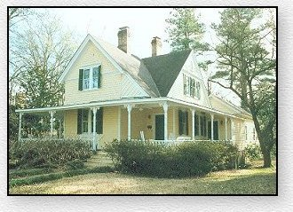

|
|
|||||
|
Home of William Howell Pegram from National Register of Historic Places |
 |
| The following history of this
house, originally built as a faculty house on the campus of present Duke
University in Durham, North Carolina, is taken from the National
Register of Historic Places inventory papers. The photograph,
together with copies of the papers, was sent by Mark Johnson whose
ancestors were closely related to the family of George Washington
Pegram, father of William Howell Pegram.
Among the faculty members and their families who moved with Trinity College to Durham, where it became the present Duke University, was that of Professor W.. H. Pegram, who was during a 55 year association with the college, a student, professor and professor emeritus. He was a prime mover in the development of the chemistry and physics departments. Pegram Dormitory on Duke University's East Campus is named in his honor. William Howell Pegram was born Aug. 18, 1846 at Chalk Level in Harnett County, North Carolina. As a youth he fought for 15 months during the Civil War under Generals Robert E. Lee and Stonewall Jackson and acquired an erect military carriage which was to remain with him all his life. He is remembered as a "lean, erect, austere figure with a long white beard." The "Alumni Register" reports "neither the battlefield nor the prison camp warped his high purpose nor made him morbid; he came forth from the conflict determined to make some contribution to the rehabilitation of his native state and steadfastly set his face toward the future, without compromise." He returned to his home and began immediately to prepare himself for college. He entered Trinity College, January, 1869 and within a few brief months he had firmly established himself as a student and leader. As an undergraduate he often assisted in the teaching of science and English literature. A graduate of the class of '73. A. M.., Tutor of Natural Science. The following year he became Professor of Natural Science and set about to develop, with limited resources, a department of science that was the forerunner of the present Departments of Chemistry, Biology, Physics, and Engineering. According to an unsigned history of the physics departments, c. 1905,
Pegram married Emma, the daughter of Rev. Braxton Craven, on June 10, 1875. Rev. Craven served as President of Trinity College, Randolph County and Pegram himself served as interim President for seven months after Craven's death in 1882. Professor and Mrs. Pegram's five sons and daughters are graduates of Trinity College, and daughter Annie had the distinction of becoming the first woman to enroll in Trinity College, Durham, in 1892. She was to become a member of the faculty of Greensboro College and the last Pegram to live in the Faculty Row house until her death in the 1960s. Professor Pegram taught English for several years after 1879. It was not until 1900 that the resources of the institution were such as to permit him to confine his teaching to Chemistry, the branch of science that held his especial interest. He also coached the debate team for many years and generations of students received their training in the mechanics of public speaking under professor Pegram. In 1917 the L.L.D. degree was conferred on him and he was named Professor Emeritus of Chemistry in 1919. He was relieved of any regular teaching duties, but was free to come and go about the campus at will giving advice and counsel whenever and wherever needed. Called "one of the most beloved man who ever served the institution", he was a charter member of Trinity College's chapter of Phi Beta Kappa and was an active member of Trinity Methodist Episcopal Church South. He died at home, April 30, 1928. In his obituary in the "Alumni Register" a conversation between Washington Duke, wealthy founder of American Tobacco Company and the modestly salaried Professor is reported. Washington Duke outlined his career's progress to Pegram who countered with: "After my Civil War experience, I spent four years on my father's farm and then four years in Trinity College, graduated 1873, was called the same year to the chair of Natural Science in said College, and have been with it ever since. From this last statement you know my financial rating." Duke saw the point and countered with "Yes, but you have made something better than money; you have helped to make men." As the campus expanded, the faculty houses were moved across the street and scattered within Trinity Park. The Pegram house was moved to a lot apparently owned by Pegram at 308 Buchanan Blvd (then Guess Mill Road). In a letter to his father March 18, 1916, George Braxton Pegram wrote:
The cost of the move is not recorded, but it is known that the move was accomplished by placing the house on logs and pulling it with a team of horses. George Pegram wrote again to his father concerning the move on Sept. 7, 1918:
The house remained in the family until the death of the last of Pegram's unmarried children, Annie. On February 20, 1962 she transferred, via trust, the house to NCNB. Following a suit filed by Greensboro College against NCNB, executor for Annie Pegram, it was sold at public auction on Nov. 22, 1966 for $11,500 to Frances G. Crabtree. She, in turn, sold it to Herndon Building Company, April 3, 1969. Threatened with demolition to make way for a parking lot for an apartment building Mr. Fred Herndon owned next door, he offered to move the house at his own expense and make it available to a citizen;s group. The Durham Historic Preservation Society bought it and the 3120 square foot house was moved again in September, 1977 to Minerva Ave. |
|